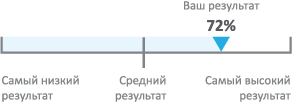

Как работать с отчетом
Здравствуйте Константин! Обязательно прочитайте этот раздел. Он поможет в дальнейшей работе с отчетом.Многие из нас хотят сделать шаг вперед. Это может быть карьерное продвижение, личное развитие, достижение успеха в текущеи работе или что-то еще. Для каждого этот шаг свой. В любом случае, отчет 360° поможет Вам в этом.
Как известно, персональная эффективность человека сильно связана с уровнем развития его личных качеств и навыков. И Вы сами наверняка задумывались о своих сильных сторонах и ограничениях. Обратная связь от людей, которые работают вместе с Вами, позволит допол- нить эту картину и определить приоритеты в развитии.
Как известно, персональная эффективность человека сильно связана с уровнем развития его личных качеств и навыков. И Вы сами наверняка задумывались о своих сильных сторонах и ограничениях. Обратная связь от людей, которые работают вместе с Вами, позволит допол- нить эту картину и определить приоритеты в развитии.
-
Что я найду в этом отчете?Отчет отражает взгляд со стороны на Ваши сильные стороны и ограничения, а также включает рекомендации по развитию.Эта информация поможет Вам составить индивидуальный план развития (ИПР). Если ИПР у Вас уже есть, отчет станет хорошим поводом для его обновления.
-
Что такое компетенция?Это набор личных качеств (знаний, умений, навыков), которые обеспечивают эффективное выполнение работы.
-
Насколько объективны полученные результаты?Мнение отдельного человека, безусловно, субъективно. В то же время, если несколько людей видят Вас определенным образом, это означает, что так оно и есть – именно так Ваше поведение выглядит для окружающих.
-
С кем имеет смысл обсудить результаты?Наиболее продуктивный способ – найти в своем окружении человека, который станет для Вас наставником и будет поддерживать Вас в развитии. Обычно это руководитель, более опытный коллега или представитель отдела по персоналу. С этим человеком стоит обсудить цели и возмож- ные действия по развитию.
-
Вопросы, на которые стоит ответить в процессе изучения отчета1) Каких результатов я ожидал? Что оказалось неожиданным?
2) Насколько мое мнение о себе сходится с мнением окружения?
3) Есть ли значимые отличия в восприятии уровня развития моих компетенций разными группами моего окружения? С чем это может быть связано?
4) Какие стороны я считаю необходимым развивать?
5) Какие компетенции критичны для выполнения стоящих передо мной задач? -
Относительный уровень развития компетенции Чтобы в дальнейшем правильно выбрать приоритеты для развития, важно понимать, каковы результаты других участников оценки. Как минимум, какой процент оценок выше или ниже Вашей. Часто встречаются ситуации, когда компетенция «попадает» в область развития, но при этом Ваш результат может быть лучшим. Или наоборот, компетенция находится в области сильных сторон, но все остальные получили более высокие оценки. Мы рекомендуем учитывать эту информацию при работе с отчетом.